Новинки радиоуправляемых моделей
Машины, катера и самолёты: что вышло, сколько стоит и чем интересно.
Свежее
FTX Outback Hi-Rock 2.0Traxxas TXC-4MFMS FCX24 Ford F-100Traxxas TRX-4 Chevrolet Blazer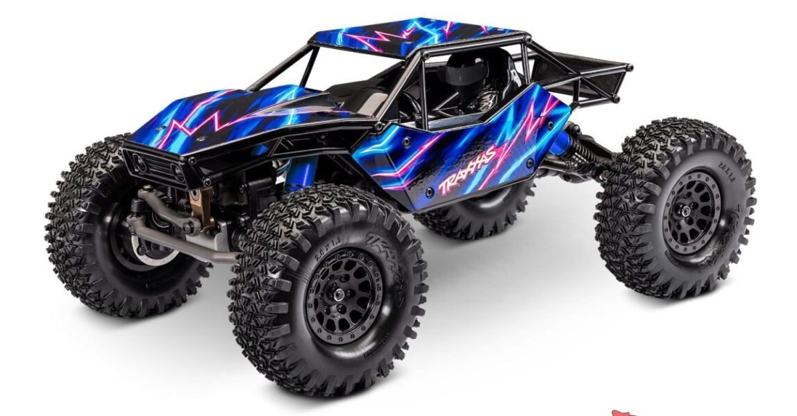
Traxxas показали TXC-4M, и это, пожалуй, главная новинка осени
Полностью новый краулер, спроектированный с нуля под экстремальный рок-кроулинг.

FTX обновили свой Outback Hi-Rock, теперь это версия 2.0 в масштабе 1:10
Вторая версия трейлового пикапа с доработанными шасси и трансмиссией.
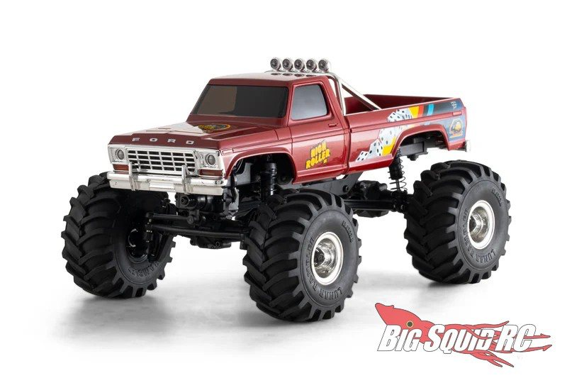
FMS опять взялись за Ford F-100, только теперь это монстр-трак в масштабе 1:24
Микро-монстр-трак на платформе FCX24 для дома и улицы.
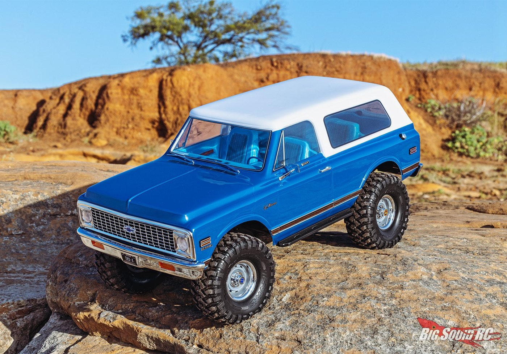
Traxxas доработали свой TRX-4 Chevrolet Blazer: теперь у него есть салон
Известный TRX-4 Blazer получил копийный салон.

FMS дразнят следующей новинкой: Ford Bronco на шасси FCX18 II
Второй кузов на новом шасси FCX18 II. Полных характеристик пока нет.

Traction Hobby анонсировали Ford Bronco Raptor в масштабе 1:8, и он огромный
Крупная копийная модель с лицензией Ford.

Furitek показали Krawl 30, соревновательный краулер в масштабе 1:30
Соревновательный микрокраулер с приводом Tri-Unity30.
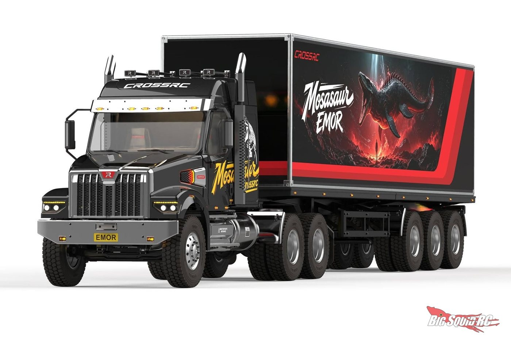
Cross RC готовят седельный тягач с полуприцепом в масштабе 1:7
Кит тягача в крупном масштабе. Характеристики, цена и сроки не раскрыты.
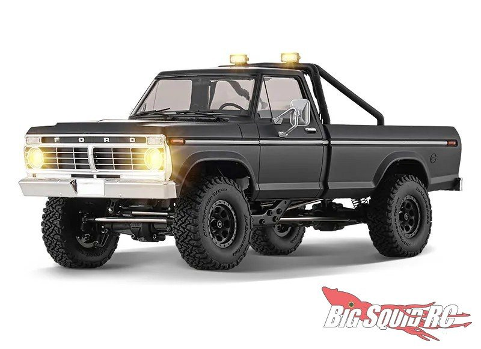
Помните F-100 от FMS в масштабе 1:18? Теперь у него есть бесколлекторная версия
Бесколлекторная версия F-100 на шасси FCX18 II.
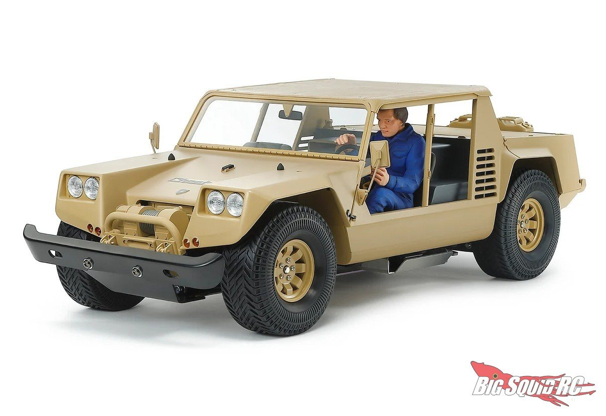
Tamiya возвращают легенду: Lamborghini Cheetah в масштабе 1:12
Обновлённое переиздание классического внедорожника, кит для сборки.
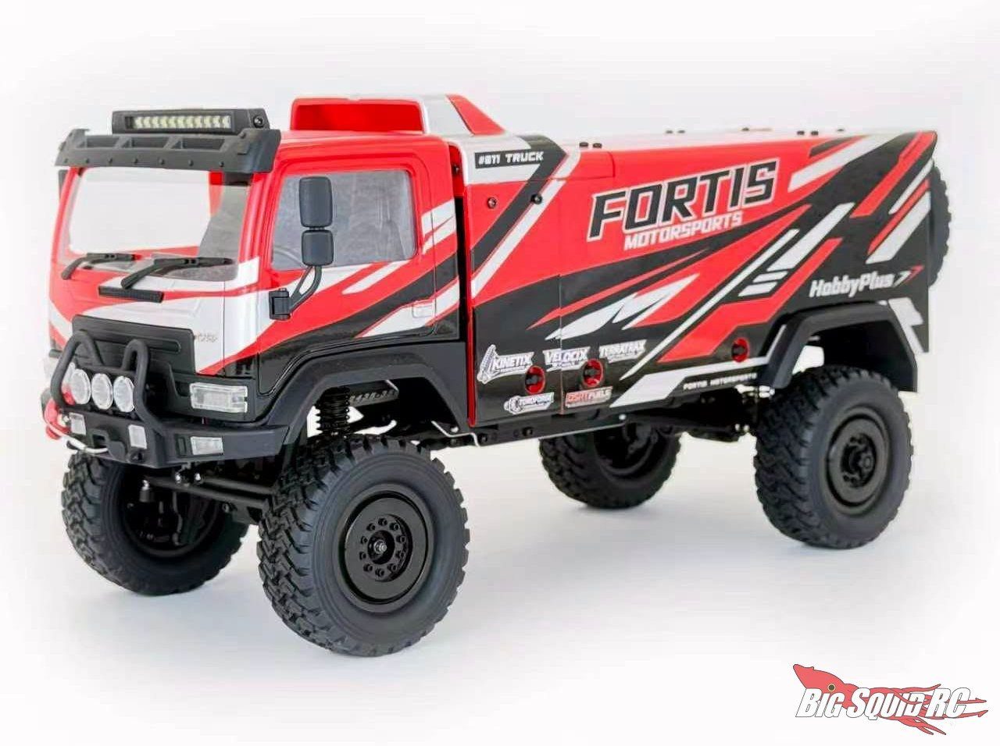
Hobby Plus анонсировали DKR4-Fortis, грузовик в стиле «Дакара» в масштабе 1:18
Полноприводная модель в стиле «Дакара».
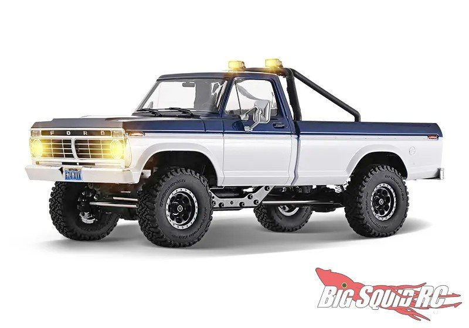
Вышли новинки у FMS в кузове Ford F-100 в масштабе 1:18
Первая модель на новом шасси FCX18 II.
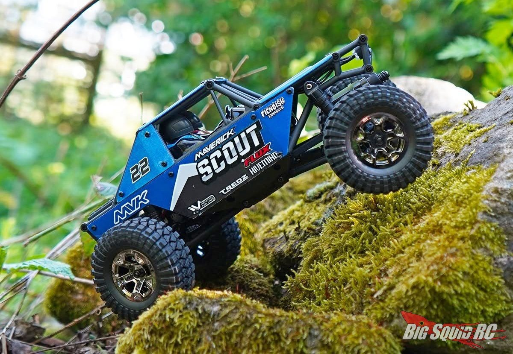
У Maverick (это бренд HPI Racing) вышел Scout24, маленький краулер в масштабе 1:24
Доступный компактный краулер от бренда HPI Racing.
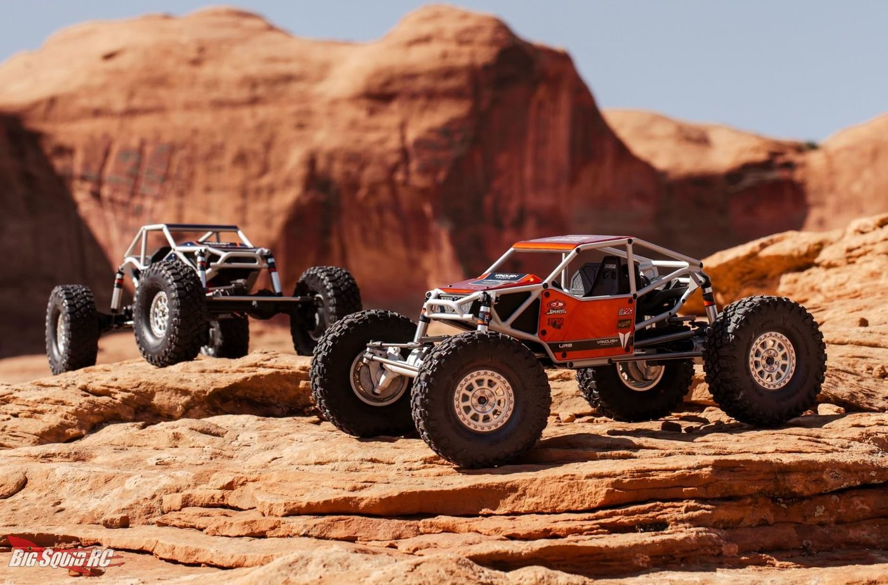
Vanquish показали URB Jimmy's 4X4 Moonbuggy. Сразу предупреждаю: смотреть можно, цену лучше не спрашивать
Премиальные киты рок-багги в трёх комплектациях.
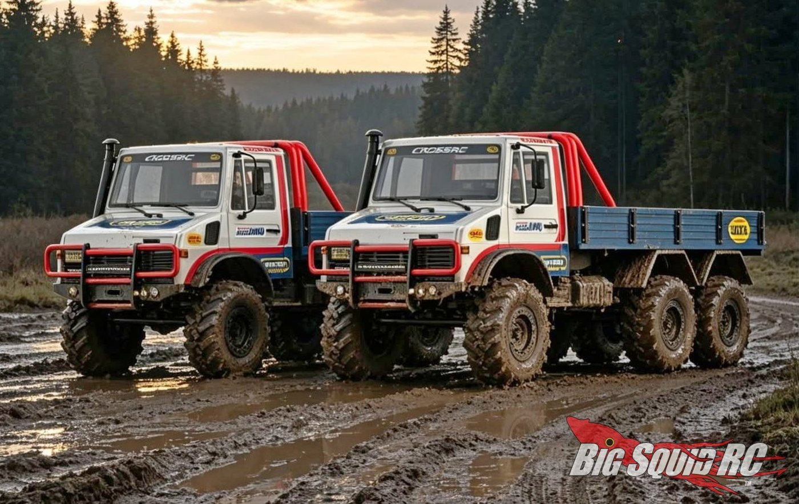
Cross RC готовят усиленные версии своих гигантов: EMO XX и EMO XXL Ultra в масштабе 1:6
Усиленные версии гигантских внедорожников 4x4 и 6x6. Цена и сроки не раскрыты.
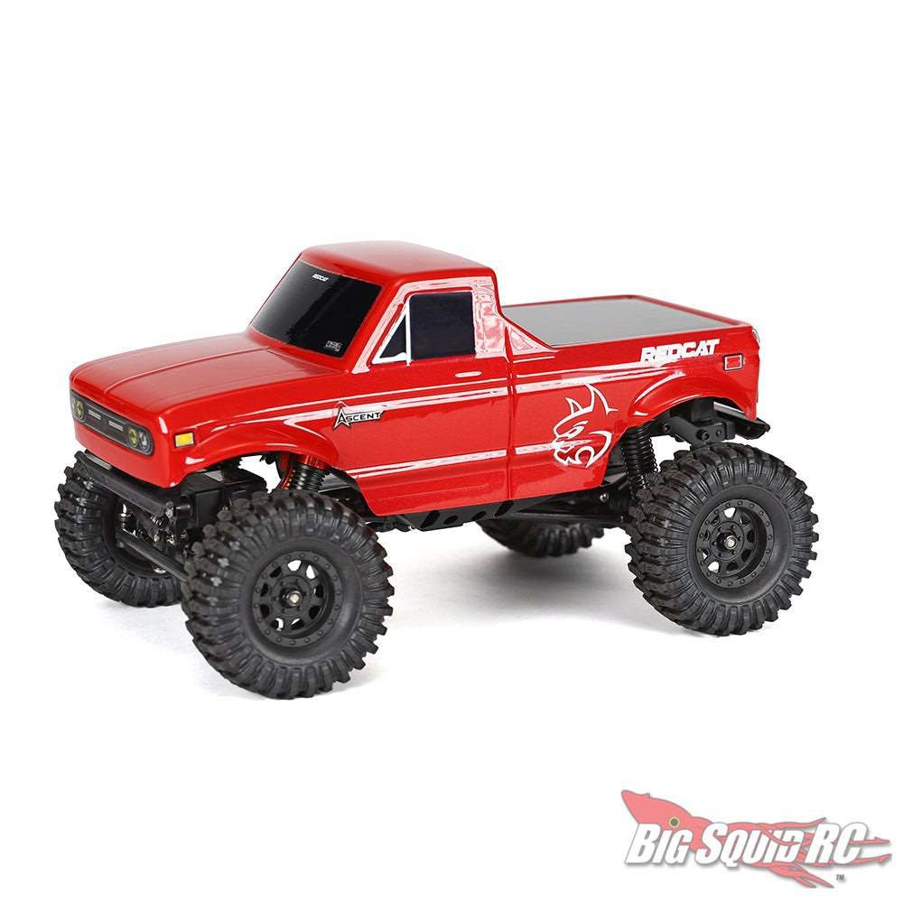
Redcat обновили свою малышку Ascent-32, вышла версия V2
Доработанный микрокраулер: больше мощности и контроля на малом ходу.
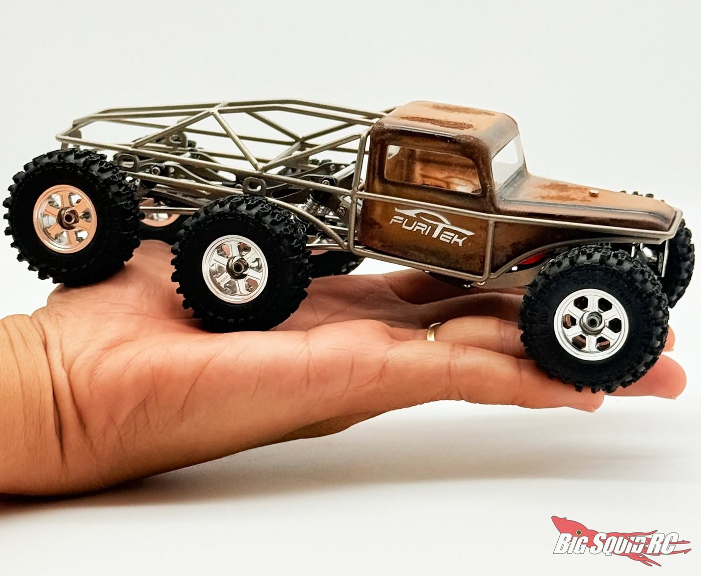
Furitek сделали шестиколёсный краулер, который помещается на ладони
Микромодель с полноценным приводом на шесть колёс.